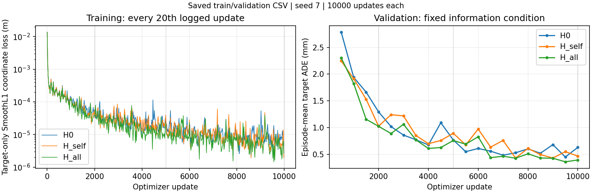
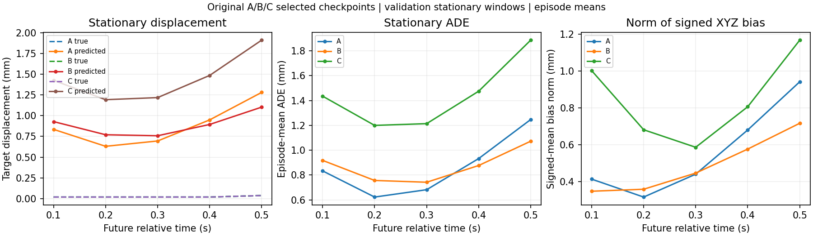

哪些历史信息帮助未来预测？
第二轮：原始300 episodes / 6300窗口 · seed 7 · H0、H_self、H_all 各10000更新 · 仅监督目标方块未来 · 补全 loss=0
一页报告 · 只读诊断 · 冻结协议 · 五个同窗口回放 · 原始指标CSV · 成对差值/CI CSV
同一当前RGB、所有当前点、18维机器人状态（含关节速度）与未来控制命令。H0禁用所有物体过去；H_self仅保留方块过去；H_all保留方块和工具过去。验证/测试沿用各组访问规则。测试集已在第一轮查看，本轮为探索性复用；家族bootstrap区间不代表训练种子稳定性。恒速读取目标历史，不是H0的同信息参考。
目标未来轨迹
| 方法 | ADE mm | FDE mm | 家族/episode/窗口 |
|---|
有效目标点/时刻 → 窗口 → episode → 跨episode等权平均；子集可重叠。条形长度为ADE，分组采用各自轴最大值。
成对差值：正值表示历史增益
| 差值 | Δ ADE mm | 相对误差下降 | 家族bootstrap 95% CI mm |
|---|
Δself=H0−H_self；Δcross=H_self−H_all。固定种子10000次家族cluster重采样，保留抽中家族全部episodes；空子集家族不补零。
训练与验证：预定预算

| 版本 | 验证选中更新 | 耗时s | 峰值allocated MiB | 有梯度参数 |
|---|
第一轮静止偏差诊断（验证集）

P0加回、固定尺度回环、米/毫米和真实相对时间索引已核验；无按真实静止状态校正输出。均值偏差并不能证明全部误差来自固定输出bias。
第一轮C历史补全与简单参考（验证集）
| 方法 | 历史ADE mm | 隐藏有效查询数 | episode/窗口 |
|---|
同一原版mask（epoch0/seed12345）。repeat-current将所有过去点放在当前位置。oracle刚体法使用真值实体分组，仅与同一可覆盖查询上的C/重复当前比较。A/B未训练历史头不是基线。
原C共享梯度方向
仅训练集16个固定batch、eval模式、无optimizer.step；future loss保留原工具+方块监督。共享集合排除独立输出头、未来action encoder与冻结RGB骨干。负cosine只表示局部一阶冲突，不证明整个训练失败原因。早期/最终C状态未保存，没有补训。
17/27配置已准备，未运行。正式预算合计30000更新，没有追加实验。根据用户后续要求发布第二轮独立页面；第一轮页面保留。